Линейные модели финансовых серий
(MA, ARMA и ARIMA)
“Количественные финансы”
Салихов Марсель (marcel.salikhov@gmail.com)
2016-12-20
Цели лекции
- понять основные принципы moving average (MA) моделей
- научиться симулировать MA-модели
- научиться оценивать MA-модели на финансовых данных в R
- понять принципы применения критериев AIC и BIC для выбора подходящей модели
- научиться использовать критерий Льюнга-Бокса (Ljung–Box test)
- понять, как строятся ARMA модели
- научиться строить прогнозы для ARMA моделей с помощью пакета
forecast
Moving average
- На прошлой лекции мы рассмотрели авторегрессионные (AR) модели. В конечном счете мы пришли к тому, что AR-модели для настоящих финансовых данных требуют слишком большого количества параметров для оценки и приводят к “подгонке” (overfitting).
- MA-модели схожи с AR-моделями, однако в отличие от них модель представляет собой не линейную комбинацию прошлых значений, а линейную комбинацию прошлых компонент белого шума.
- МA-модель “видит” случайные шоки белого шума непосредственно для каждого текущего значения серии. AR-модель же “видит” шоки косвенным образом, через регрессирование к своим предыдущим значениям.
- Однако MA-модель порядка \(q\) видит последние q шоков, в то время как AR(p) модель будет учитывать все предыдущие шоки с экспоненциальным убыванием.
Определение MA-модели
Если серия временного ряда \({x_t}\) является моделью скользящего среднего порядка \(q\) (MA(q)), то это означает, что
\[ x_t = w_t + \beta_1 w_{t-1} + \ldots + \beta_q w_{t-q} \] где \({w_t}\) – это белый шум с \(E(w_t)=0\) и дисперсией \(\sigma^2\).
- MA-модель всегда стационарна
- В MA-модель можно включать константу
- Обычно модели MA оценивают методом максимального правдоподобия (или другими численными методами). Аналитическая оценка (как МНК) затруднена.
MA(1) модель
Попробуем симулировать MA(1) c параметром \(\beta = 0.6\). То есть мы симулируем модель вида:
\[ x_t = w_t + 0.6 w_{t-1} \]
set.seed(123)
x <- w <- rnorm(100)
for (t in 2:100) x[t] <- w[t] + 0.6*w[t-1]
layout(1:2)
plot(x, type="l")
acf(x)
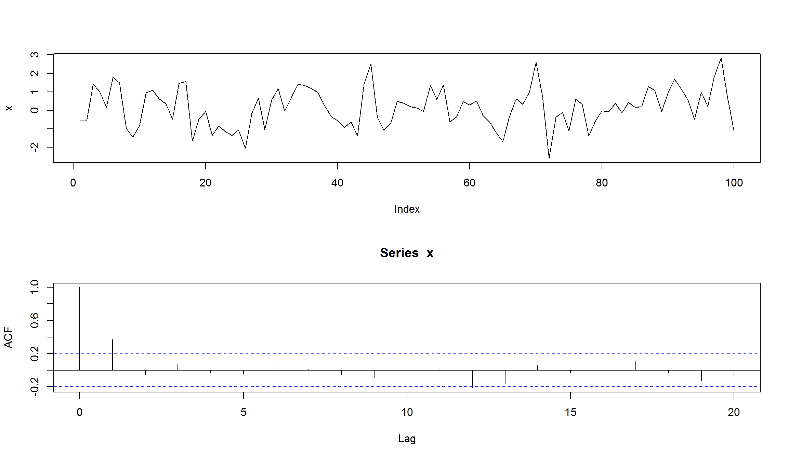
- Для MA-модели все автокорреляции с лагом \(k>q\) должны быть равны 0.
Оценка симулированной MA(1)-модели
Мы будем использовать функцию arima для оценки MA-моделей (функция Arima из пакета forecast позволяет оценивать модели с константой).
x.ma <- Arima(x, order=c(0, 0, 1))
x.ma
Series: x
ARIMA(0,0,1) with non-zero mean
Coefficients:
ma1 intercept
0.7240 0.1430
s.e. 0.0898 0.1546
sigma^2 estimated as 0.8271: log likelihood=-131.76
AIC=269.53 AICc=269.78 BIC=277.34
x.ma$coef[1]+c(-1.96, 1.96)*0.0898 #доверительный интерваля для беты
[1] 0.5480362 0.9000522
2.5 % 97.5 %
ma1 0.5481109 0.8999776
intercept -0.1600075 0.4459076
- Коэффициенты отличаются значимым образом от 0.
- Доверительные интервалы включат “истинные” значения коэффициентов
МA(1)-модель с коэффициентом -0.6
set.seed(123)
x <- w <- rnorm(100)
for (t in 2:100) x[t] <- w[t] - 0.6*w[t-1]
layout(1:2)
plot(x, type="l")
acf(x)
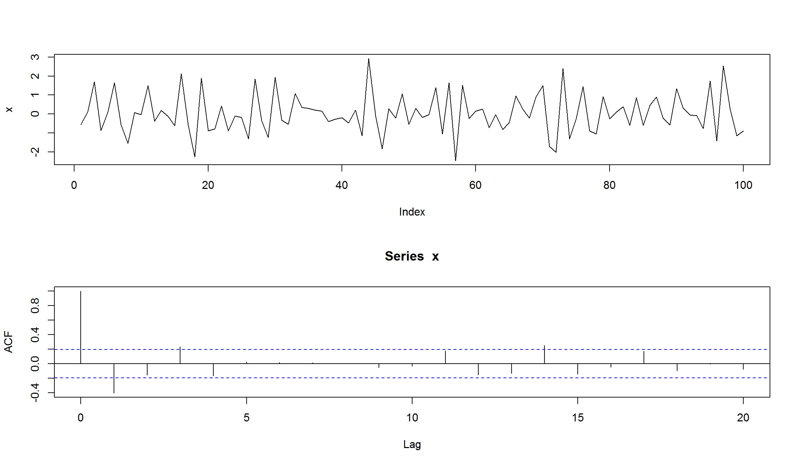
оценка симулированной модели
x.ma <- arima(x, order=c(0, 0, 1))
x.ma
Call:
arima(x = x, order = c(0, 0, 1))
Coefficients:
ma1 intercept
-0.6337 0.0370
s.e. 0.0788 0.0338
sigma^2 estimated as 0.8227: log likelihood = -132.39, aic = 270.78
x.ma$coef[1]+c(-1.96, 1.96)* 0.0788 #доверительный интерваля для беты
[1] -0.7881117 -0.4792157
MA(2)-модель
симулируем модель:
set.seed(123)
x <- w <- rnorm(1000)
for (t in 4:1000) x[t] <- w[t] + 0.6*w[t-1] + 0.3*w[t-2]
layout(1:2)
plot(x, type="l")
acf(x)
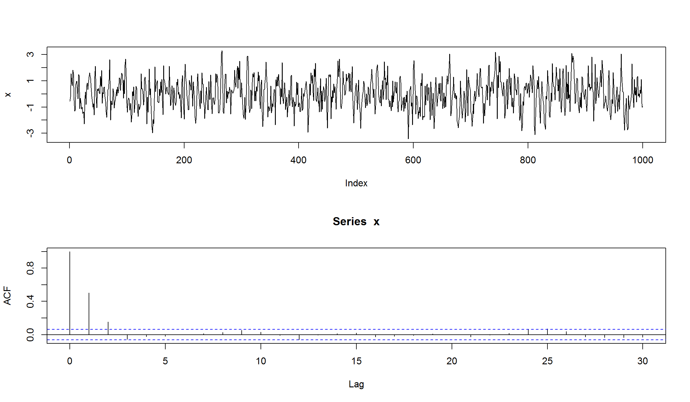
оценим модель
x.ma <- arima(x, order=c(0, 0, 2))
x.ma
Call:
arima(x = x, order = c(0, 0, 2))
Coefficients:
ma1 ma2 intercept
0.5852 0.2827 0.0307
s.e. 0.0311 0.0307 0.0585
sigma^2 estimated as 0.9822: log likelihood = -1410.14, aic = 2828.29
2.5 % 97.5 %
ma1 0.52422837 0.6461799
ma2 0.22251632 0.3429303
intercept -0.08393561 0.1453965
ACF для MA(1) и MA(2)
Для симуляции сложных ARMA-моделей можно использовать функцию arima.sim.
ma1 <- arima.sim(n=1000, model=list(ma=c(0.5)))
ma1 <- arima.sim(n=1000, model=list(ma=c(0.5, -0.3)))
par(mfrow=c(1,2))
Acf(ma1, na.action = na.omit)
Acf(ma2, na.action = na.omit)
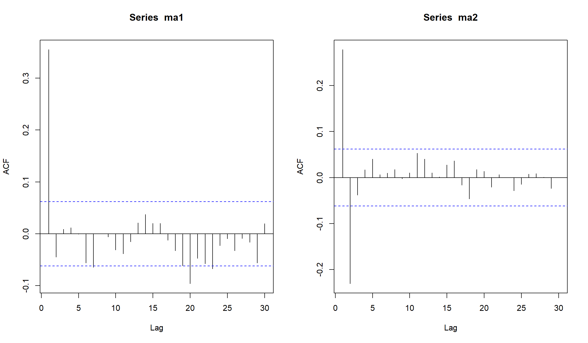
PACF для MA(1) и MA(2)
- PACF показывает частичные автокорреляции (partial autocorrelations) в ряде на разных лагах.
- Разница между
Acf и acf (Pacf и pacf) заключается в том, что первые функции не отображают на графике корреляции на лаге 0, которая по определению будет равна 1. Это позволяет лучше “видеть” остальные лаги.
par(mfrow=c(1,2))
Pacf(ma1)
Pacf(ma2)
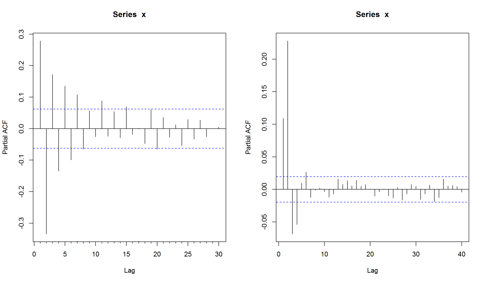
Индекс ММВБ
Попробуем построить MA-модель для доходностей индекса ММВБ. Исходный ряд выглядит следующим образом:
#library(rusquant)
#MICEX <- rusquant::getSymbols.Finam('MICEX',from = "2001-01-01") # ммвб
chartSeries(MICEX, theme = 'white')
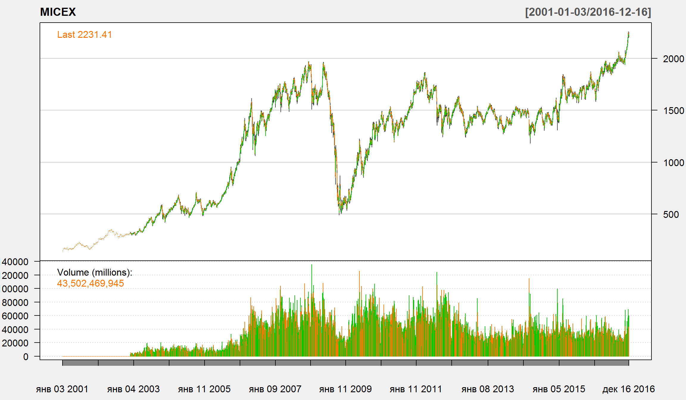
в логарифмах
log.MICEX <- log(MICEX$MICEX.Close)
plot(log.MICEX)
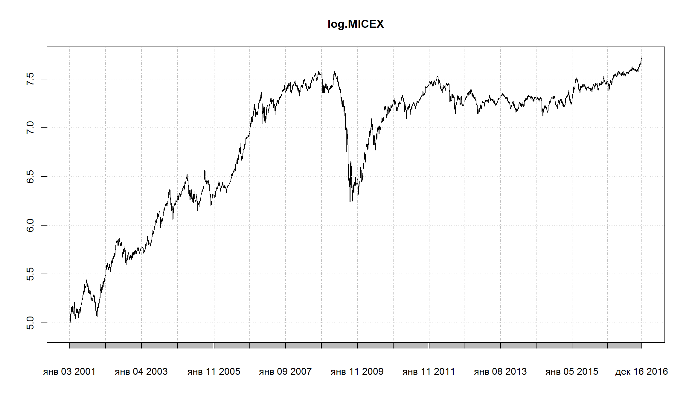
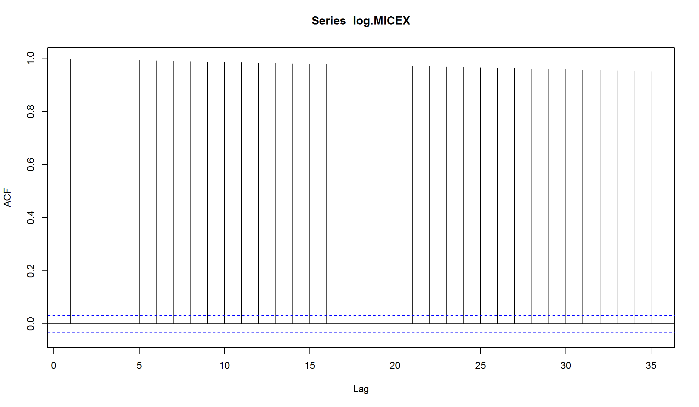
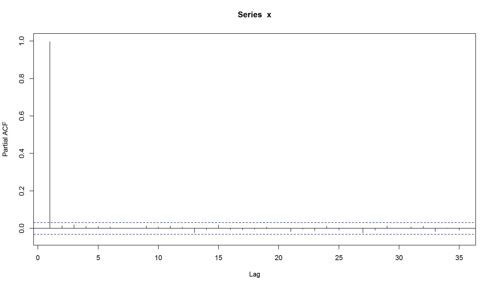
для лог-доходностей
diff.log.MICEX <- c(NA, diff(log.MICEX))
plot(diff.log.MICEX, type='l', col = 2)
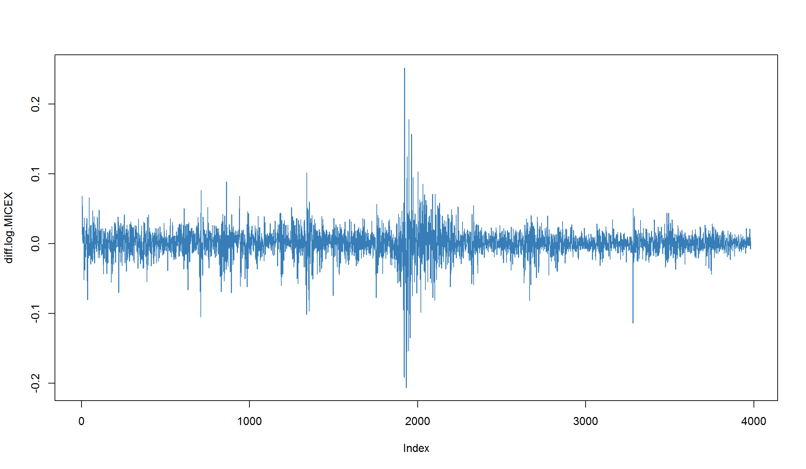
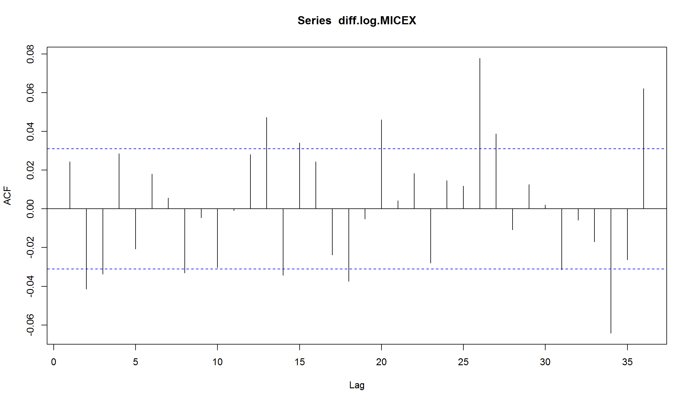
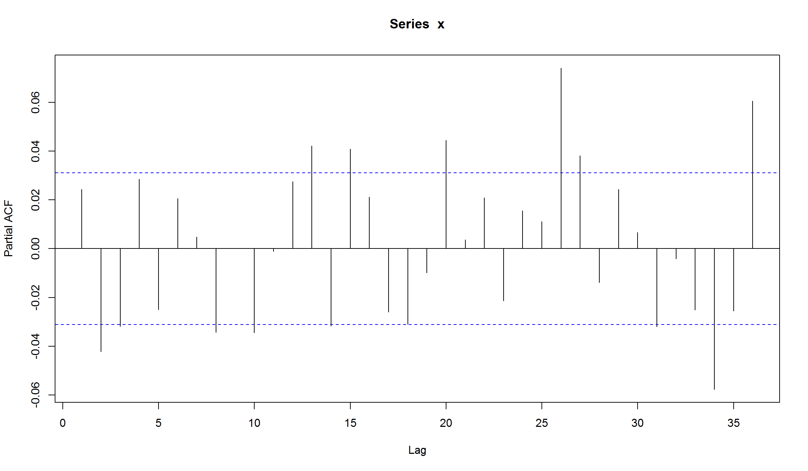
MA(1)-модель для индекса ММВБ
micex.ma <- Arima(diff.log.MICEX, order=c(0, 0, 1))
micex.ma
Series: diff.log.MICEX
ARIMA(0,0,1) with non-zero mean
Coefficients:
ma1 intercept
0.0266 7e-04
s.e. 0.0165 3e-04
sigma^2 estimated as 0.0004229: log likelihood=9811.81
AIC=-19617.62 AICc=-19617.61 BIC=-19598.75
acf(micex.ma$res[-(1:2)])
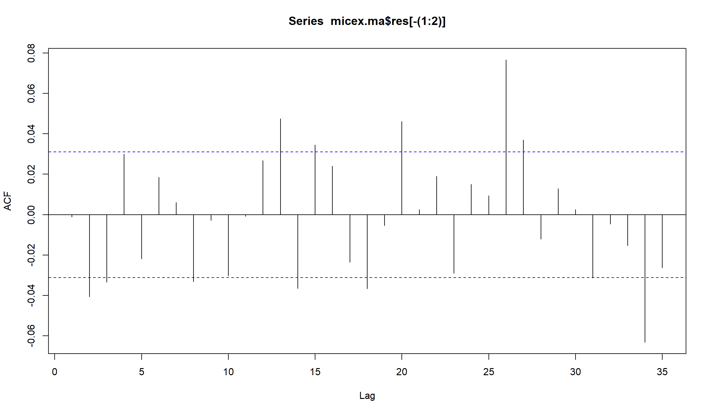
Остатки MA(1) для индекса ММВБ
- Остатки MA(1)-модели не являются белым шумом. В остатках сохраняется значимая автокорреляция на лагах 13,20,26,34.
Построим график остатков:
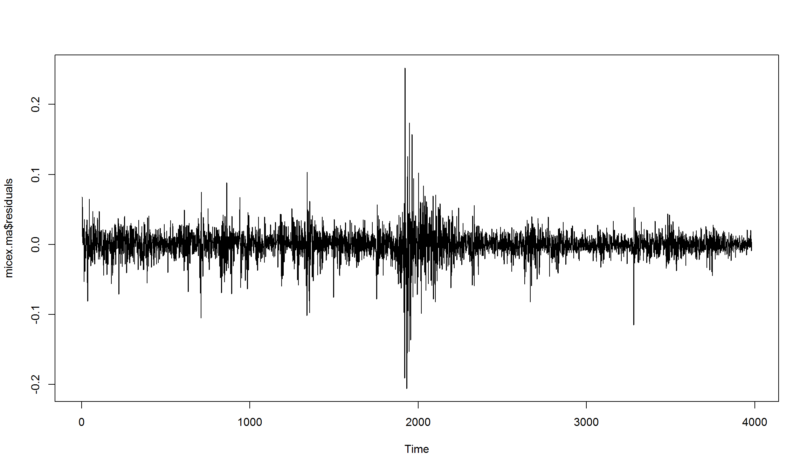
MA(2) для доходностей индекса ММВБ
попробуем оценить MA(2)-модель
micex.ma <- arima(diff.log.MICEX, order=c(0, 0, 2))
micex.ma
Call:
arima(x = diff.log.MICEX, order = c(0, 0, 2))
Coefficients:
ma1 ma2 intercept
0.0226 -0.0378 7e-04
s.e. 0.0159 0.0154 3e-04
sigma^2 estimated as 0.0004222: log likelihood = 9814.8, aic = -19621.6
acf(micex.ma$res[-(1:2)])
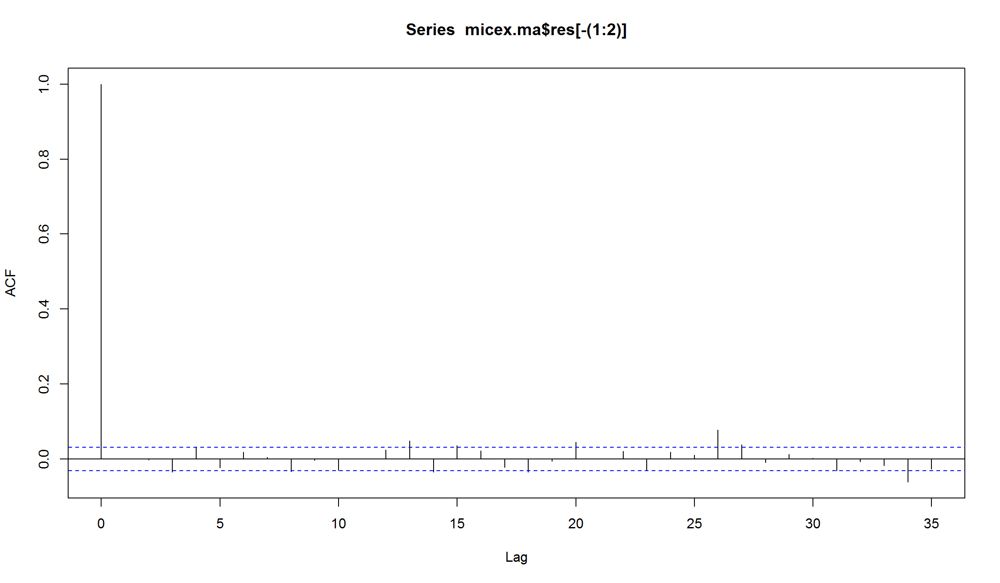
- MA(2)-модель позволила “убрать” автокорреляцию на лаге 2, но автокорреляция на других лагах сохранилась.
MA(3)-модель для индекса ММВБ
попробуем оценить MA(3)-модель
micex.ma <- arima(diff.log.MICEX, order=c(0, 0, 3))
micex.ma
Call:
arima(x = diff.log.MICEX, order = c(0, 0, 3))
Coefficients:
ma1 ma2 ma3 intercept
0.0263 -0.0401 -0.0363 7e-04
s.e. 0.0159 0.0154 0.0157 3e-04
sigma^2 estimated as 0.0004217: log likelihood = 9817.46, aic = -19624.91
acf(micex.ma$res[-(1:2)])
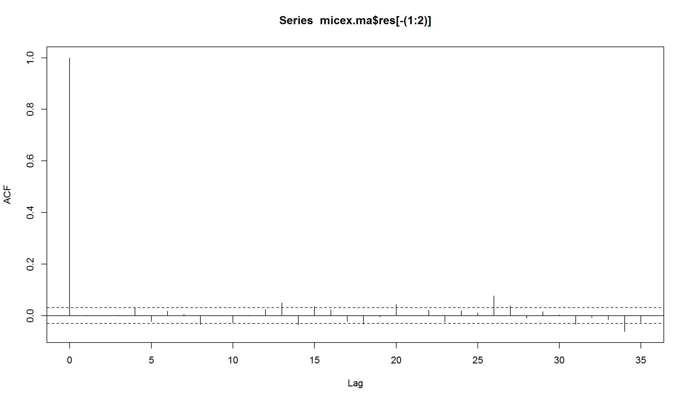
- Построение MA(3)-модели не позволило улучшить автокоррелограмму.
Выводы по AR и MA моделям
- Оба типа моделей - AR и MA - позволяют частично объяснять автокорреляцию в сериях лог-доходностей акций.
- Однако кластеризация волатильности и эффекты “длинной памяти” все же остаются в остатках.
- Может ли объединение двух подходов улучшить ситуацию?
Информационные критерии
- Информационные критерии – это инструменты, которые помогают нам выбирать “лучшие” модели. Информационный критерий оценивает “качество” модели по сравнению с альтернативными спецификациями модели.
- Чаще всего используются два критерия - критерий Акаике (AIC) и Байесовский информационный критерий (BIC).
- Общая идея всех информационных критериев заключается в оценке баланса между прогностический точностью модели и ее сложностью.
- Мы хотим строить минимально сложные модели (“бритва Оккама”), но которые при этом имели максимальную объясняющую способность
Информационный критерий Акаике
Если мы используем функцию правдоподобия (likelyhood function) для оценки модели c \(k\) параметрами и значение \(L\) максимизирует функцию правдоподобия, то AIC рассчитывается как:
\[ AIC = -2log(L) + 2k \]
- Мы предпочитаем модели, которые имеют минимальное значение AIC.
- Как видно из формулы, AIC увеличивается по мере роста количества параметров (k) и снижается по мере роста log-likelyhood (L), то есть точности оценки
- Абсолютные значения AIC не имеют значения, мы сравниваем только значения AIC для различных моделей, которые построены на одних данных.
- Значения информационных критериев для разных серий не сравнимы между собой!
Байесовский информационный критерий (BIC)
BIC рассчитывается как:
\[ BIC = -2log(L) + k log(n) \] где \(n\) - количество наблюдений в рассматриваемой серии.
- AIC и BIC могут указывать на разные модели как “лучшие” и противоречить друг другу
- Можно использовать AIC как более предпочтительный критерий
ARMA-модели
- AR-модели учитывают прошлое поведение (лаги) в качестве входных параметров. С сутевой точки зрения это позволяет учитывать некоторые особенности поведения участников финансового рынка рынка, такое как mean reversion (возвращение к среднему) или momentum (инерционность финансовых рынков – после роста сохраняется тенденция к росту, и – наоборот).
- MA-модели используются для оценки “информационных шоков” в серии. К примеру, такими шоками могут быть неожиданные события или поступление новой информации (выход квартальной финансовой отчетности) и так далее. То есть, MA-модель позволяет оценивать единовременную реакцию серии на шоки.
- ARMA-модели учитывают оба этих аспекта при моделировании финансовых серий.
- ARMA-модели в принципе не учитывают эффекты “кластеризации волатильности”. Это не условные гетероскедастичные модели. Мы считаем, что дисперсия является постоянной в ARMA-моделях.
Определение ARMA-модели
Если серия временного ряда \({x_t}\) является моделью ARMA(p,q), то
\[ x_t = \alpha_1 x_{t-1} + \alpha_2 x_{t-2} + \ldots + w_t + \beta_1 w_{t-1} + \beta_2 w_{t-2} + \ldots + \beta_q w_{t-q} \]
- Основное преимущество ARMA-модели по сравнению c AR или MA, заключается в том, что как правило она требует меньше параметров для оценки.
- Вспомните, что AR-модели на настоящих данных требовали оценки коэффициентов для 20-30 лагов.
Симулирование ARMA(1,1)
Простейшая ARMA-модель – это ARMA(1,1). Модель имеет вид:
\[x_t + \alpha x_{t-1} + w_t + \beta w_{t-1} \]
set.seed(123)
x <- arima.sim(n=1000, model=list(ar=0.5, ma=-0.5))
plot(x)
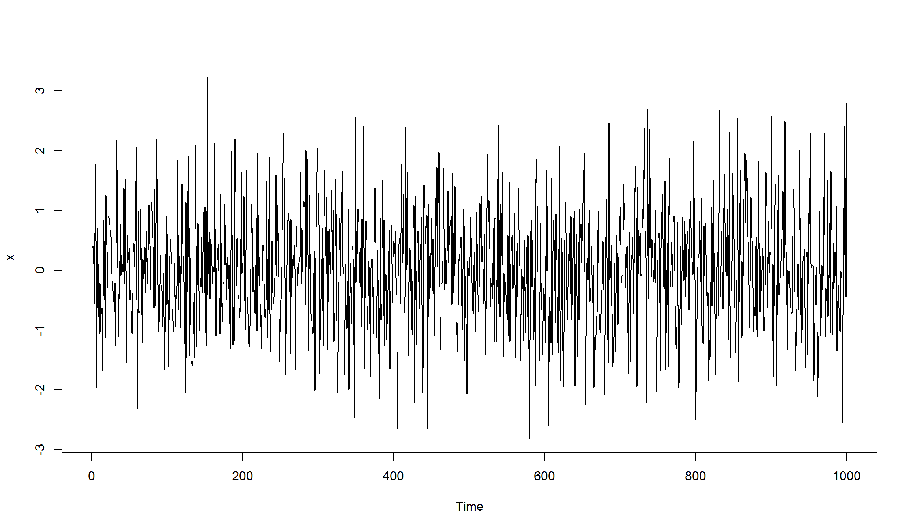

- Модель не имеет значимых автокорреляция на всех лагах
оценим симулированную модель:
arima(x, order=c(1, 0, 1))
Warning in arima(x, order = c(1, 0, 1)): possible convergence problem:
optim gave code = 1
Call:
arima(x = x, order = c(1, 0, 1))
Coefficients:
ar1 ma1 intercept
0.5997 -0.6334 0.0158
s.e. 0.3777 0.3658 0.0289
sigma^2 estimated as 0.9951: log likelihood = -1416.46, aic = 2840.93
Симулирование ARMA(2,2)
set.seed(123)
x <- arima.sim(n=1000, model=list(ar=c(0.5, -0.25), ma=c(0.5, -0.3)))
plot(x)
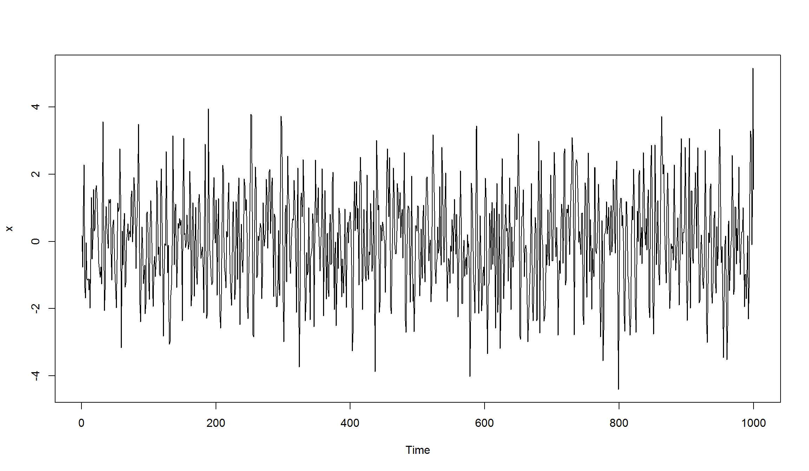
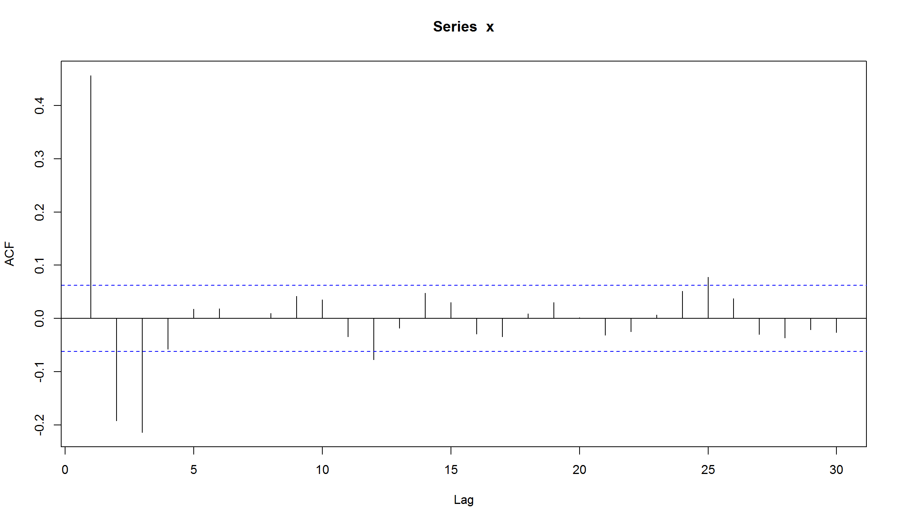
оценим модель
Arima(x, order=c(2, 0, 2))
Series: x
ARIMA(2,0,2) with non-zero mean
Coefficients:
ar1 ar2 ma1 ma2 intercept
0.5099 -0.2693 0.4636 -0.3309 0.0269
s.e. 0.1157 0.0346 0.1190 0.1122 0.0473
sigma^2 estimated as 1.009: log likelihood=-1422.06
AIC=2856.13 AICc=2856.21 BIC=2885.58
confint(arima(x, order=c(2, 0, 2)))
2.5 % 97.5 %
ar1 0.28315655 0.7366981
ar2 -0.33701341 -0.2015434
ma1 0.23045772 0.6968166
ma2 -0.55079028 -0.1110161
intercept -0.06574923 0.1196155
- Доверительные интервалы содержат настоящие значения параметров ar=c(0.5, -0.25), ma=c(0.5, -0.3), но являются достаточно широкими
Построение ARMA-моделей
Построим несколько моделей для доходностей индекса ММВБ
# без константы (сводобного члена)
fit.00 <- Arima(diff.log.MICEX, c(0, 0, 0), include.constant=FALSE)
fit.01 <- Arima(diff.log.MICEX, c(0, 0, 1), include.constant=FALSE)
fit.02 <- Arima(diff.log.MICEX, c(0, 0, 2), include.constant=FALSE)
fit.10 <- Arima(diff.log.MICEX, c(1, 0, 0), include.constant=FALSE)
fit.11 <- Arima(diff.log.MICEX, c(1, 0, 1), include.constant=FALSE)
fit.12 <- Arima(diff.log.MICEX, c(1, 0, 2), include.constant=FALSE)
fit.20 <- Arima(diff.log.MICEX, c(2, 0, 0), include.constant=FALSE)
fit.21 <- Arima(diff.log.MICEX, c(2, 0, 1), include.constant=FALSE)
fit.22 <- Arima(diff.log.MICEX, c(2, 0, 2), include.constant=FALSE)
# с константой
fit.00c <- Arima(diff.log.MICEX, c(0, 0, 0), include.constant=TRUE)
fit.01c <- Arima(diff.log.MICEX, c(0, 0, 1), include.constant=TRUE)
fit.02c <- Arima(diff.log.MICEX, c(0, 0, 2), include.constant=TRUE)
fit.10c <- Arima(diff.log.MICEX, c(1, 0, 0), include.constant=TRUE)
fit.11c <- Arima(diff.log.MICEX, c(1, 0, 1), include.constant=TRUE)
fit.12c <- Arima(diff.log.MICEX, c(1, 0, 2), include.constant=TRUE)
fit.20c <- Arima(diff.log.MICEX, c(2, 0, 0), include.constant=TRUE)
fit.21c <- Arima(diff.log.MICEX, c(2, 0, 1), include.constant=TRUE)
fit.22c <- Arima(diff.log.MICEX, c(2, 0, 2), include.constant=TRUE)
# аггрегируем результаты
models <- data.frame(p = rep(c(0, 0, 0, 1, 1, 1, 2, 2, 2), 2),
d = rep(0, 18),
q = rep(c(0, 1, 2), 6),
include.constant = c(rep(FALSE, 9), rep(TRUE, 9)),
loglik = c(fit.00$loglik, fit.01$loglik, fit.02$loglik,
fit.10$loglik, fit.11$loglik, fit.12$loglik,
fit.20$loglik, fit.21$loglik, fit.22$loglik,
fit.00c$loglik, fit.01c$loglik, fit.02c$loglik,
fit.10c$loglik, fit.11c$loglik, fit.12c$loglik,
fit.20c$loglik, fit.21c$loglik, fit.22c$loglik),
aicc = c(fit.00$aicc, fit.01$aicc, fit.02$aicc,
fit.10$aicc, fit.11$aicc, fit.12$aicc,
fit.20$aicc, fit.21$aicc, fit.22$aicc,
fit.00c$aicc, fit.01c$aicc, fit.02c$aicc,
fit.10c$aicc, fit.11c$aicc, fit.12c$aicc,
fit.20c$aicc, fit.21c$aicc, fit.22c$aicc),
bic = c(fit.00$bic, fit.01$bic, fit.02$bic,
fit.10$bic, fit.11$bic, fit.12$bic,
fit.20$bic, fit.21$bic, fit.22$bic,
fit.00c$bic, fit.01c$bic, fit.02c$bic,
fit.10c$bic, fit.11c$bic, fit.12c$bic,
fit.20c$bic, fit.21c$bic, fit.22c$bic)
)
print(models, digits=6)
p d q include.constant loglik aicc bic
1 0 0 0 FALSE 9808.20 -19614.4 -19608.1
2 0 0 1 FALSE 9809.60 -19615.2 -19602.6
3 0 0 2 FALSE 9812.40 -19618.8 -19599.9
4 1 0 0 FALSE 9809.49 -19615.0 -19602.4
5 1 0 1 FALSE 9810.28 -19614.6 -19595.7
6 1 0 2 FALSE 9813.39 -19618.8 -19593.6
7 2 0 0 FALSE 9812.85 -19619.7 -19600.8
8 2 0 1 FALSE 9813.66 -19619.3 -19594.2
9 2 0 2 FALSE 9814.35 -19618.7 -19587.2
10 0 0 0 TRUE 9810.52 -19617.0 -19604.5
11 0 0 1 TRUE 9811.81 -19617.6 -19598.8
12 0 0 2 TRUE 9814.80 -19621.6 -19596.4
13 1 0 0 TRUE 9811.70 -19617.4 -19598.5
14 1 0 1 TRUE 9812.51 -19617.0 -19591.9
15 1 0 2 TRUE 9815.93 -19621.8 -19590.4
16 2 0 0 TRUE 9815.25 -19622.5 -19597.3
17 2 0 1 TRUE 9816.19 -19622.4 -19590.9
18 2 0 2 TRUE 9816.78 -19621.5 -19583.8
Лучшая модель по AIC
выберем “лучшую” модель по критерию Акаике
library(ggplot2)
models$descr <- paste(models$p, models$q, models$include.constant)
p <- ggplot(models, aes(descr,aicc))
p + geom_point()+coord_flip()+theme_minimal()
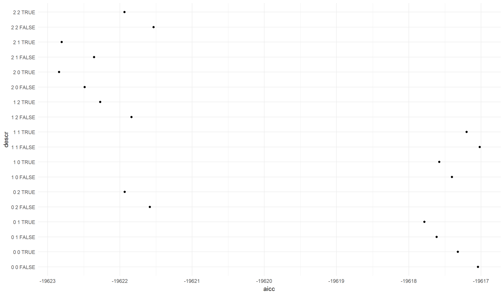
models[which(models$aicc == min(models$aicc)),]
p d q include.constant loglik aicc bic descr
16 2 0 0 TRUE 9815.249 -19622.49 -19597.34 2 0 TRUE
какая модель минимизирует AIC?
Оценка “лучшей” модели (AIC)
выбрали “вторую” лучшую модель по критерию AIC
fit.best <- Arima(diff.log.MICEX, c(2, 0, 1), include.constant=TRUE)
print(fit.best)
Series: diff.log.MICEX
ARIMA(2,0,1) with non-zero mean
Coefficients:
ar1 ar2 ma1 intercept
0.3544 -0.0529 -0.3296 7e-04
s.e. 0.2367 0.0160 0.2369 3e-04
sigma^2 estimated as 0.0004222: log likelihood=9816.19
AIC=-19622.37 AICc=-19622.36 BIC=-19590.92
Остатки модели ARMA
resid <- residuals(fit.best)
plot(resid, type="l", col=2)
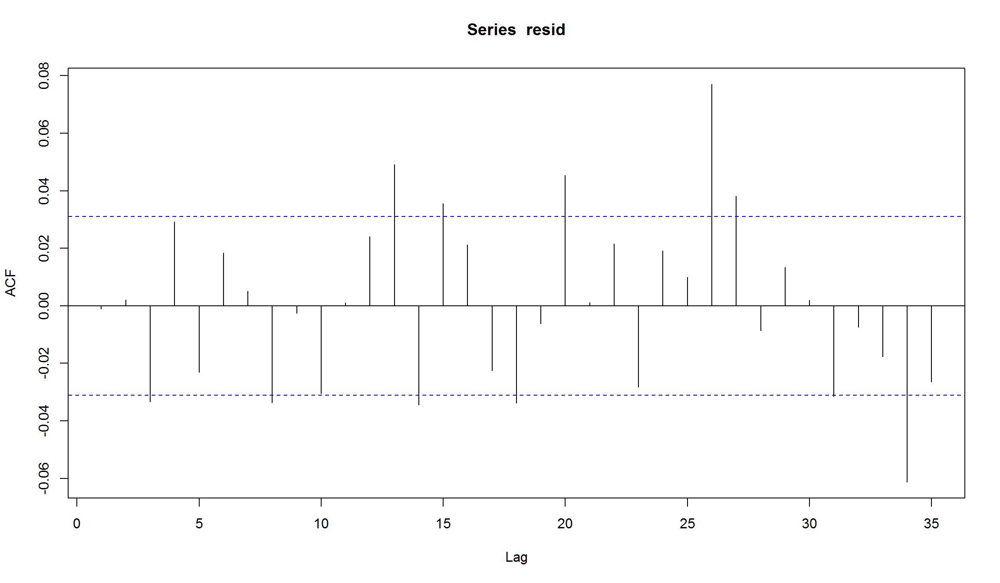

- даже в “лучшей” модели ARMA сохранилась автокорреляция в остатках
Cтатистика Ljung-Box
- Статистика Ljung-Box является классическим тестом на гипотезу о том, что набор автокорреляций в модели совместно отличается от 0.
- Тест не оценивает каждый индивидуальный лаг на отличие от 0, а оценивает совокупность лагов одновременно.
- \(H0\): серия на каждом лаге является i.i.d., то есть корреляции между между лагами равны нулю
- \(H1\): серия на каждом лаге не является i.i.d., то есть в ней сохраняется автокорреляция
Формально тест рассчитывает следующую статистику:
\[ Q = n(n+2) \sum_{k=1}^{h} \frac{\hat{\rho}^2}{n-k} \]
где \(n\) – количество наблюдений, \(\hat{\rho}^2\) – выборочная автокорреляция на лаге \(k\), \(h\) – тестируемый лаг.
- Мы отвергаем нулевую гипотезу \(H0\), если \(Q > \chi^2_{a,h}\) (для распределения хи-квадрат с \(h\) степенями свободы).
- Мы можем не вдаваться в подробности оценки, а использовать функцию
Box.test для проведения теста:
Box.test(resid, lag=10, type = "Ljung-Box", fitdf=3)
Box-Ljung test
data: resid
X-squared = 19.738, df = 7, p-value = 0.006165
- если мы используем тест на остатках модели, то необходимо скорректировать количество степеней свободы (
fitdf)
- fitdf = p +q и тестируемые лаги (
lag) должны быть больше fitdf
- Тест указывает на сохранение автокорреляции в остатках модели
Построение прогноза
Для построения прогноза необходимо использовать функцию forecast из одноименного пакета:
plot(forecast(fit.best, h=100, level=95, fan = TRUE), col=2)

- h – определяет длину прогноза
- level – определяет доверительные интервалы для интервалов предсказания (prediction interval)
Построение прогноза с помощью auto.arima
- Пакет forecast позволяет автоматически находить лучшие спецификации ARMA моделей
fit1 <- auto.arima(diff.log.MICEX, ic = 'aicc')
fit1
Series: diff.log.MICEX
ARIMA(4,0,0) with non-zero mean
Coefficients:
ar1 ar2 ar3 ar4 intercept
0.0250 -0.0402 -0.0325 0.0285 7e-04
s.e. 0.0159 0.0159 0.0159 0.0159 3e-04
sigma^2 estimated as 0.0004217: log likelihood=9818.88
AIC=-19625.75 AICc=-19625.73 BIC=-19588.01
fcst <- forecast(fit1, h=100, level=95, fan = TRUE)
plot(forecast(fit1, h=100, level=95, fan = TRUE), col=2)
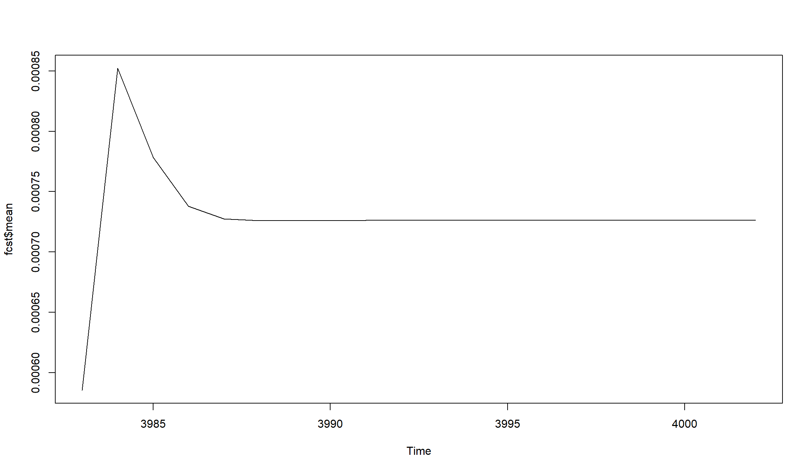
plot(fcst$mean[1:50], type = 'l')
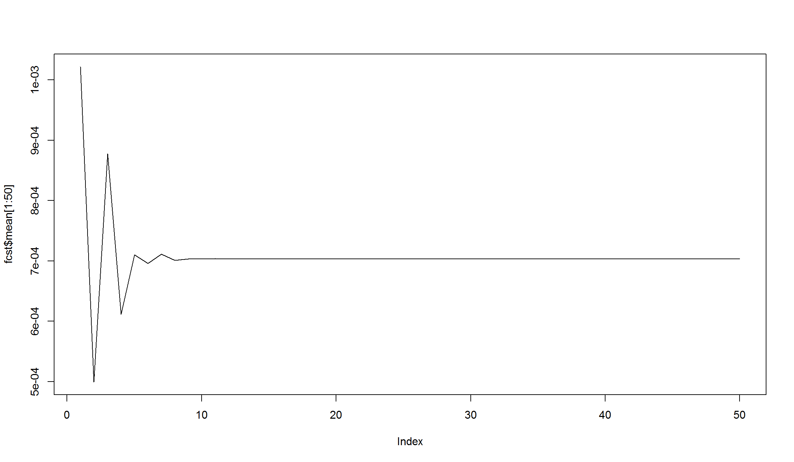
- Мы “нашли” вручную модель ARMA(2,1) или ARMA(2,0), в то время как ’auto.arima` предлагает нам модель ARMA(4,0).
ARIMA-модели
- Серия {x_t} является \(ARIMA(p,d,q)\) моделью, если \(\Delta^d x_t\) является моделью \(ARMA(p,q)\).
- К примеру, если лог-доходности моделируются ARMA(p,q), то лог-цены будут ARIMA(p,1,q).
- Random walk является моделью ARIMA(0,1,0), а белый шум - моделью ARIMA(0,0,0).
мы также можем находить модели и строить прогнозы для нестационарных серий c помощью auto.arima
fit2 <- auto.arima(log.MICEX, ic = 'aicc')
fit2
Series: log.MICEX
ARIMA(3,1,3) with drift
Coefficients:
ar1 ar2 ar3 ma1 ma2 ma3 drift
-0.2862 -0.029 0.6264 0.3127 -0.0027 -0.6603 7e-04
s.e. 0.1683 0.167 0.1472 0.1614 0.1644 0.1406 3e-04
sigma^2 estimated as 0.0004212: log likelihood=9823.16
AIC=-19630.31 AICc=-19630.28 BIC=-19580
plot(forecast(fit2, h=100, level=95, fan = TRUE), col=2)
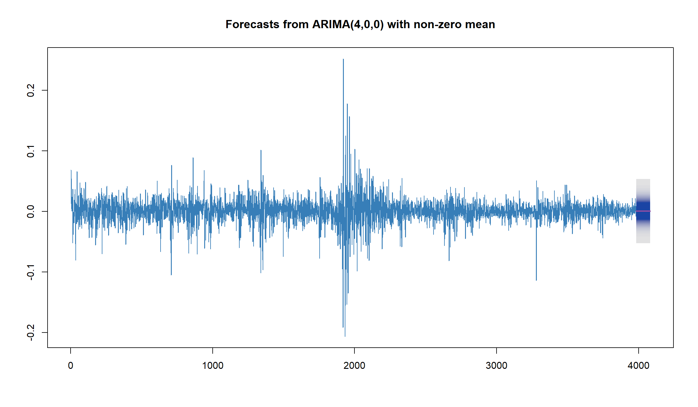
fit2 <- auto.arima(log.MICEX, ic = 'aicc', allowdrift = FALSE,allowmean = TRUE, lambda=NULL)
plot(forecast(fit2, h=100, level=95, fan = TRUE), col=2)
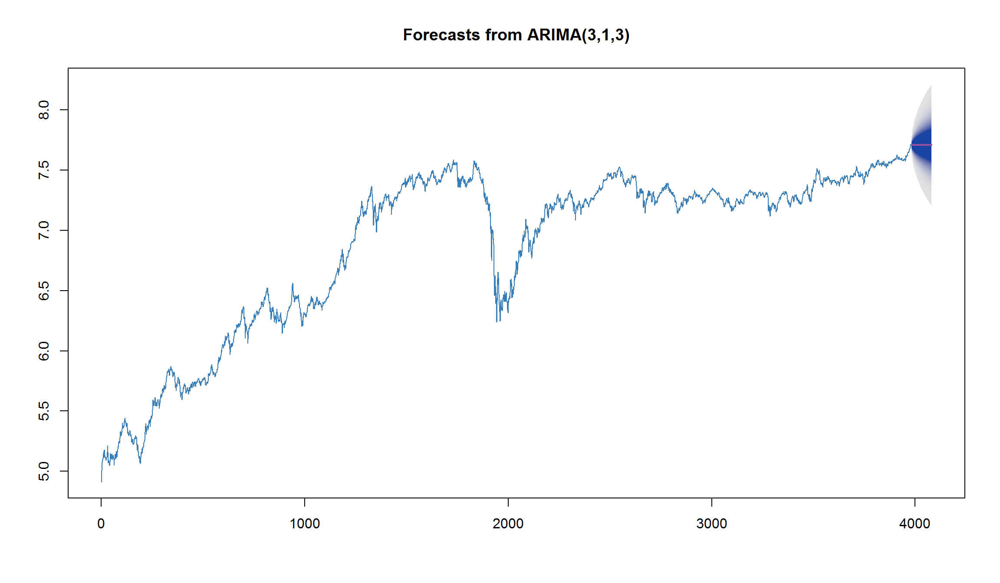
Выводы
- Мы используем PACF для определения ориентировочного порядка AR-моделей (последний значимый лаг на PACF определяет порядок модели - \(p\))
- Мы используем ACF для определения порядка MA-моделей (последний значимый лаг на АСА определяет порядок модели - \(q\)).
- Информационные критерии (AIC, BIC) часто используются для выбора оптимальной модели. Эти критерии “штрафуют” модели за сложность (количество оцениваемых параметров)
- ARMA модели позволяют использовать меньше параметров чем AR или MA по отдельности
- Все ARMA модели не позволяют моделировать меняющуюся во времени волатильность
- Прогнозы на основе ARMA имеет смысл строить только на несколько периодов вперед
Использованные источники:
- “An Introduction to Analysis of Financial Data with R” (Ruey S. Tsay)
- “Statistics and Data Analysis for Financial Engineering” (David Ruppert & David Matteson)
- Analyzing Financial Data and Implementing Financial Models Using R (Clifford Ang)
- Forecasting Financial Time Series (Patrick Perry)
- Autoregressive Moving Average ARMA(p, q) Models for Time Series Analysis (Michael Halls-Moore)